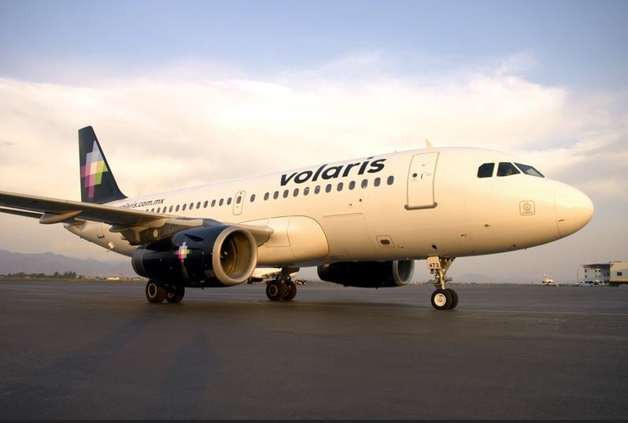

Volai | Agrolašmuo Volai skirti suspausti paviršinį dirvos sluoksnį mažame gylyje, pagrinde sėjant javus, kukurūzus ir burokus. Volų naudojimas yra labai svarbus agrotechninis veiksmas nuo kurio ženkliai priklauso apdirbamų laukų kokybė. Nauda kurią duoda...
Volai - UAB Margučiai Naudota žemės ūkio technika, padargai - volai. Detalesnė informacija ir nuotraukų galerija internetinėje svetainėje agrolasmuo.lt Susisiekite.
Volai žemės ūkio technika - Skelbiu.lt Jūsų žemės ūkiui AB LYTAGRA siūlo AMAZONE dirvos ruošimo techniką. Skutikliai, kultivatoriai ir volai Jūsų ūkio dirvos ruošimui, visiems Jūsų ūkio poreikiams.
volai skelbimai - Skelbiu.lt Masažiniai volai sportui, siekiantiems sveiko ir gražaus kūno . Kokybiški ir patvarūs masažiniai voleliai internetu, parduodami žema kaina - pigiai .
Volai nuoma | Storent UAB Universalūs volai skirti tiek asfaltui tiesti, tiek ir gruntui sutankinti. Katalogas . 01 - Žemės darbų technika; 02 - Teleskopiniai ir šakiniai krautuvai
Volai. | Reabilitacijai, slaugai, sportui. Neįgaliųjų ... Masažiniai volai bus nepamainomas įrankis raumenų masažui, tempimui, taip pat ir norint stimuliuoti akupunktūrinius taškus. Šis volas kūną atpalaiduoja palaipsniui, efektyviai mažina įtampą. Masažinio volo panaudojimo galimybės plačios: giliųjų audinių masažui, taip pat atpalaidavimui, jogai, pilatesui, stabilizavimo ...
Volai, Žemės ūkio padargai | Autoplius.lt Jūs esate čia Sportui namuose - Volai.. Apie mus. Teida – daugiau nei 25 metus dirbanti kompanija, teikianti klientams kokybiškus ir modernius reabilitacijos, slaugos, sporto ir sveikatingumo gaminius, taip pat neįgaliesiems skirtą techniką.
Rexius ir Rollex - volai, didinantys jūsų derlių Rekvizitai UAB Margučiai Įmonės kodas: 301400534 PVM kodas: LT100003668814 Margučių g. 3, Margučių k., Miežiškių sen., Panevėžio raj., LT-38100
Volai nuoma | Storent UAB
2020.10.29 05:06

lt ENGLISH LITHUANIAN LIETUVA REGISTRUOTIS Prisijungti STORENT Latvia STORENT Estonia STORENT Lithuania STORENT Finland STORENT Sweden Produktų katalogas Papildomos paslaugos DUK Kompanija Kontaktai lt LIETUVA LIETUVA REGISTRUOTIS Prisijungti STORENT Latvia STORENT Estonia STORENT Lithuania STORENT Finland STORENT Sweden PRADINIS PUSLAPIS Produkto katalogas Grunto tankinimo įranga Volai Pasirinkti įrangos tipą Žemės darbų technika Teleskopiniai ir šakiniai krautuvai Keltuvai Pastoliai, laikini stogai ir klojinių įranga Mobilūs bokšteliai ir kopėčios Grunto tankinimo įranga Armatūros apdirbimo įranga Betonavimo įranga Kompresoriai ir pneumatiniai instrumentai Generatoriai ir elektros įrengimai Suvirinimo įrengimai Elektros instrumentai Šildytuvai ir drėgmės separatoriai Valymo technika Hidrauliniai įrengimai Siurbliai Matavimo aparatai Modulio tipo ir sandėlių konteineriai ir WC Mobili tvora Kiti instrumentai Autokranai ir autobokšteliai REGISTRUOTIS Prisijungti Susisiekite su mumis
Volai
Universalūs volai skirti tiek asfaltui tiesti, tiek ir gruntui sutankinti. Katalogas 01 - Žemės darbų technika 02 - Teleskopiniai ir šakiniai krautuvai 03 - Keltuvai 04 - Pastoliai, laikini stogai ir klojinių įranga 05 - Mobilūs bokšteliai ir kopėčios 06 - Grunto tankinimo įranga 07 - Armatūros apdirbimo įranga 08 - Betonavimo įranga 09 - Kompresoriai ir pneumatiniai instrumentai 10 - Generatoriai ir elektros įrengimai 11 - Suvirinimo įrengimai 12 - Elektros instrumentai 13 - Šildytuvai ir drėgmės separatoriai 14 - Valymo technika 15 - Hidrauliniai įrengimai 16 - Siurbliai 17 - Matavimo aparatai 18 - Modulio tipo ir sandėlių konteineriai ir WC 19 - Mobili tvora 20 - Kiti instrumentai 22 - Autokranai ir autobokšteliai Įrangos tipas Visi produkto tipai Grunto tankinimo įranga Volai Volas asfaltui ir gruntui, 2t Volas asfaltui ir gruntui, 3t Volas asfaltui ir gruntui, 4,5t Grunto volas, 7t Grunto volas, 10t Grunto volas, 13t Grįžti į pirminę kategoriją Rodyti: 1-9 nuo 15 Rušiuoti pagal Rūšiuoti pagal abėcėlę A-Z Rūšiuoti pagal abėcėlę Z-A Rūšiuoti pagal kodą (aprašymą) Rūšiuoti pagal kodą (aprašymą) Volas asfaltui ir gruntui, 2t Produkto kodas: Hamm HD 8 VV Prisijunkite norėdami pamatyti kainas Grunts veltnis, 13t [LV] Produkto kodas: Dynapac CA3500D Prisijunkite norėdami pamatyti kainas Volas gruntui, 11,5t Produkto kodas: AMMAN AC110-2 Prisijunkite norėdami pamatyti kainas Volas gruntui, 13t Produkto kodas: Hamm 3411 Prisijunkite norėdami pamatyti kainas Volas gruntui, 13t Produkto kodas: Hamm 3412 Prisijunkite norėdami pamatyti kainas Volas gruntui, 13t Produkto kodas: Dynapac CA302 Prisijunkite norėdami pamatyti kainas Grunto volas, 13t Produkto kodas: CAT CS563E Prisijunkite norėdami pamatyti kainas Volas gruntui, 10t Produkto kodas: Hamm 3410 Prisijunkite norėdami pamatyti kainas Volas gruntui, 7,2t Produkto kodas: Dynapac CA1500D Prisijunkite norėdami pamatyti kainas STORENT Visos teisės saugomos 2020